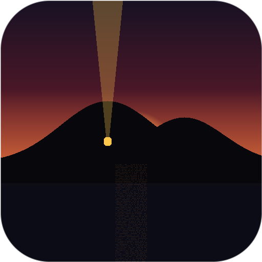
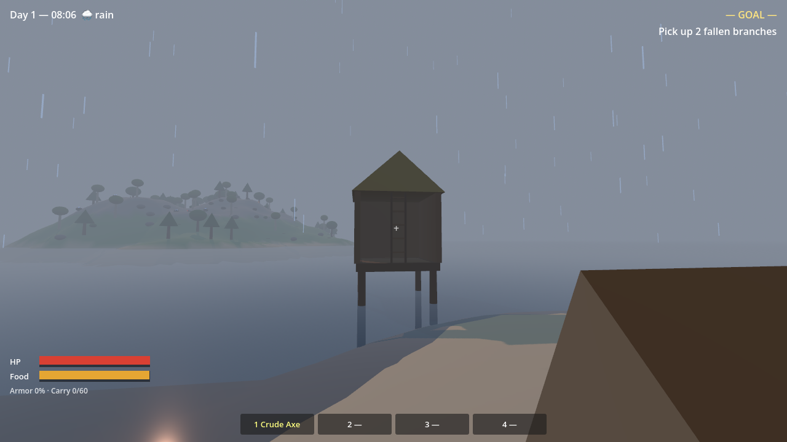
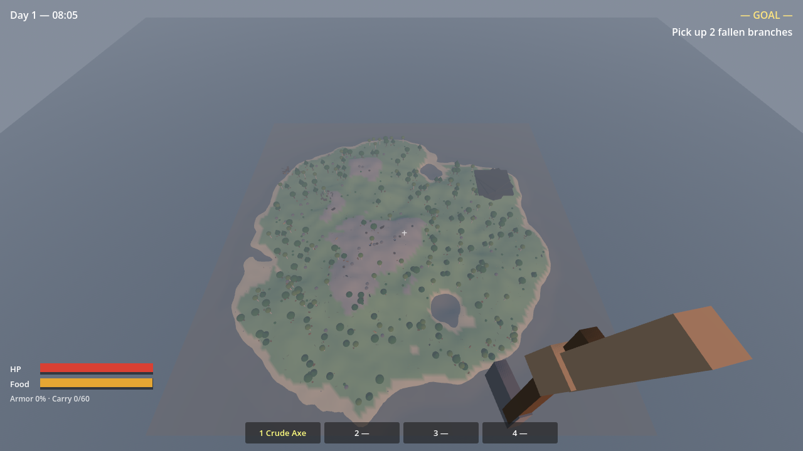
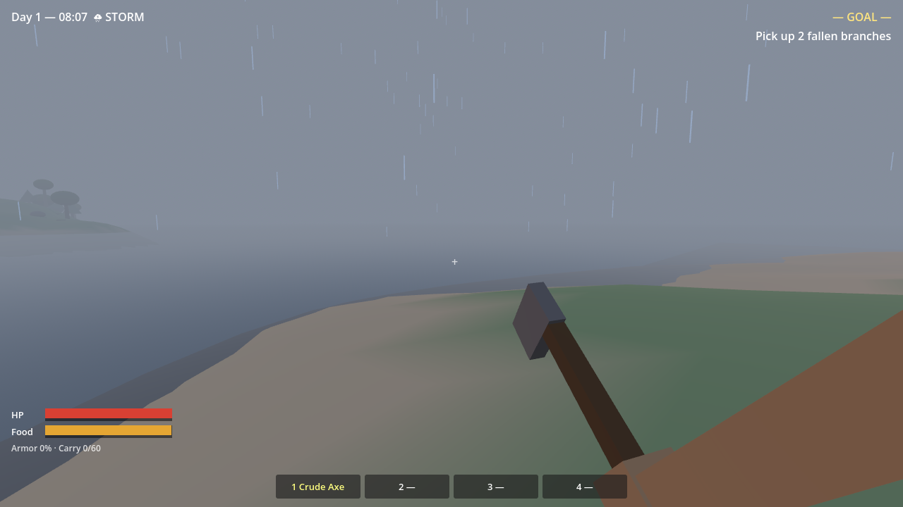
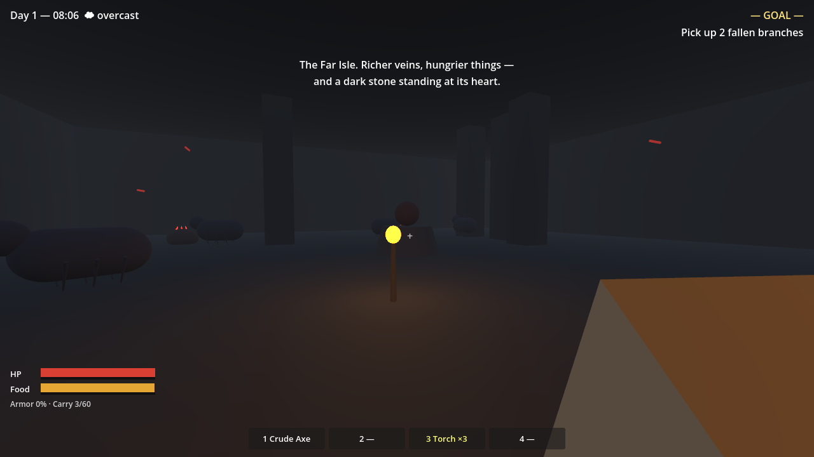
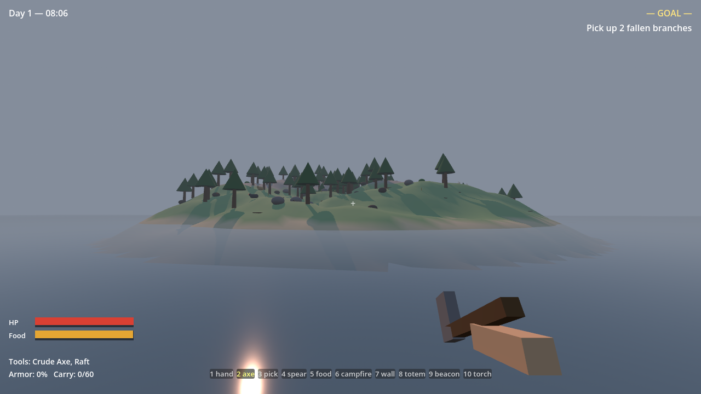
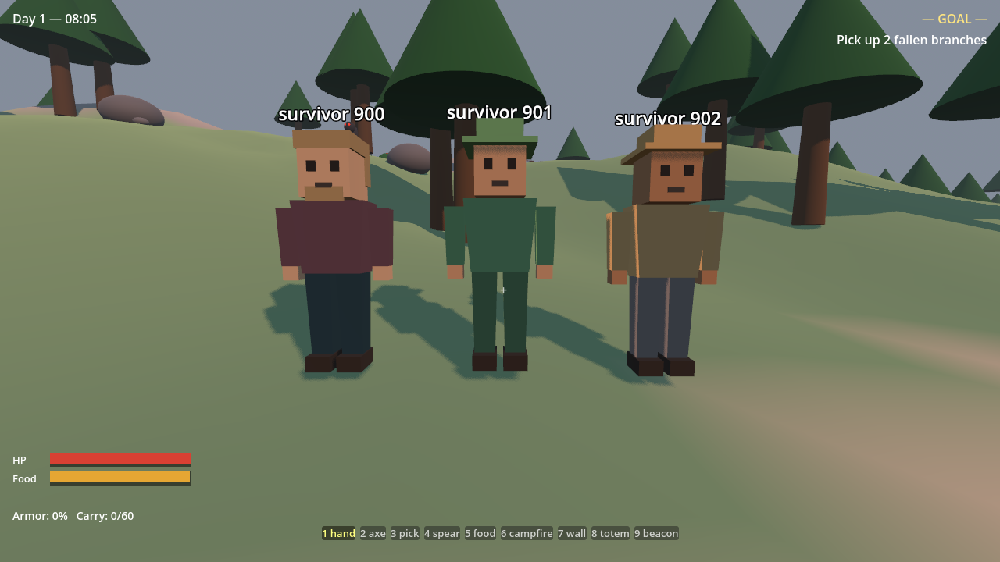

A co-op survival island for 2–8 friends where you cannot hurt each other — the game won't let you — and where, unlike every survival game you've played, the game can be beaten.
Free. Unsigned early builds — Windows: “More info → Run anyway”. macOS: right-click → Open the first time.






No punching trees. Branches from deadfall, fiber from dry grass, string twisted by hand — then your first crude axe, and the island opens up.
The shipwreck's journal leads to wolf-carried keys, ruins, a signal beacon at the peak — and something answering from beyond the reef.
Snap-together foundations, walls, doorways, windows, thatched roofs. Doors that swing. A claim totem that keeps the rot away — feed it.
Stand still and the bear loses interest. Never meet a boar's eyes. Torchlight is the only thing a cave dweller fears. Learn the rule or wear the scar.
Fiber → hide → iron → leviathan scale. What your friends wear is what they've survived. No chat. Your look is your name.
Raft past the reef to the Far Isle — richer veins, hungrier things, and a monolith that wants three moonstones.
Rain gutters your torches. Storms shove your raft and split the sky. Fog nights? The wolves are closer than they sound.
Restore the island's Heart for the kind peace — or feed your totem a moonstone at night and face THE LONG GAME: sieges, trials, and a world that seals forever if you fail.
Forge a lock and key as one. Your household shares every door. Thieves can always bash a lock — and half the island will hear it.
That's Gatekeeper quarantining an unsigned download, not actual damage. Fix it in Terminal:
xattr -cr ~/Downloads/Maroon.app
(adjust the path to wherever you unzipped it), then open normally. Or: System Settings → Privacy & Security → "Open Anyway". Signed builds come with the Steam release.